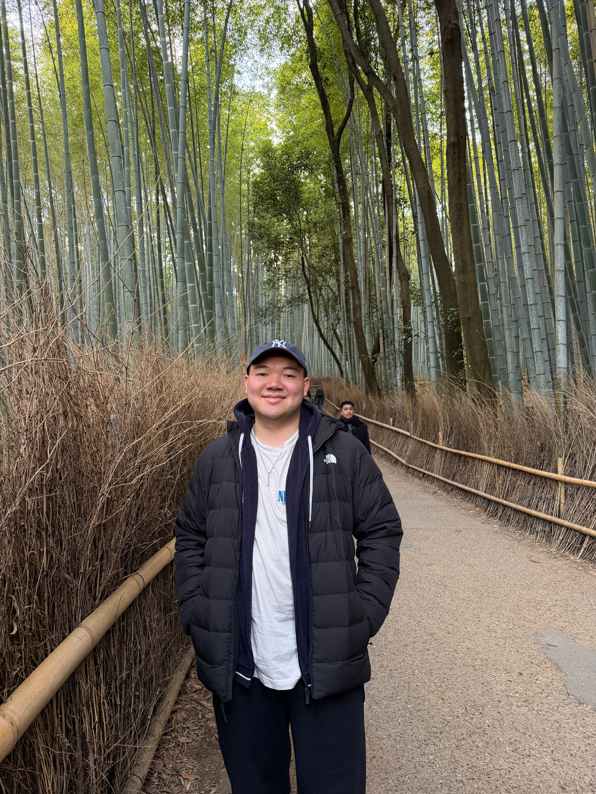
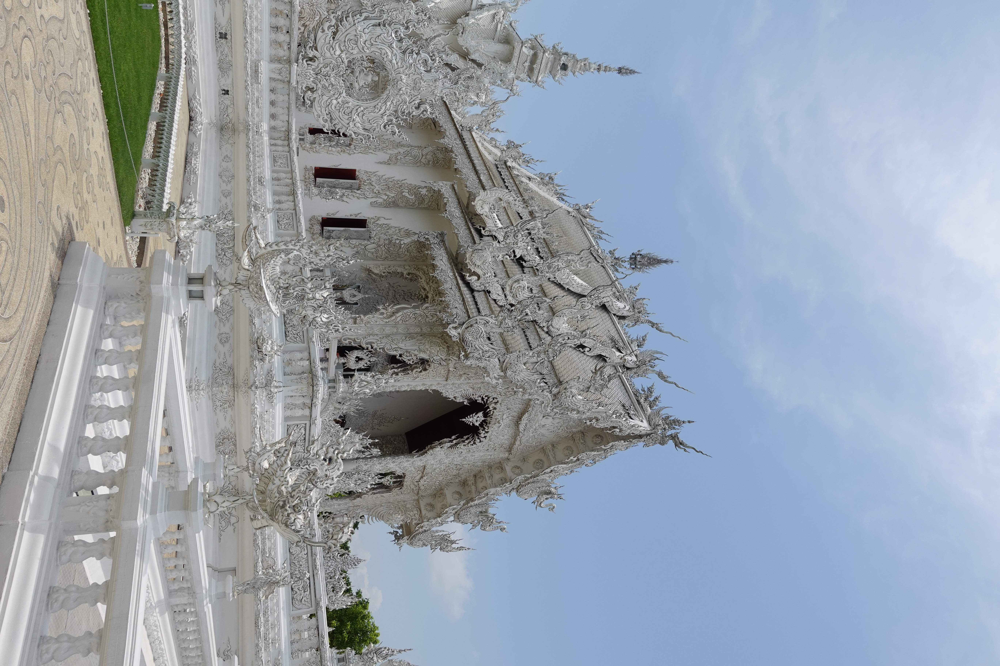
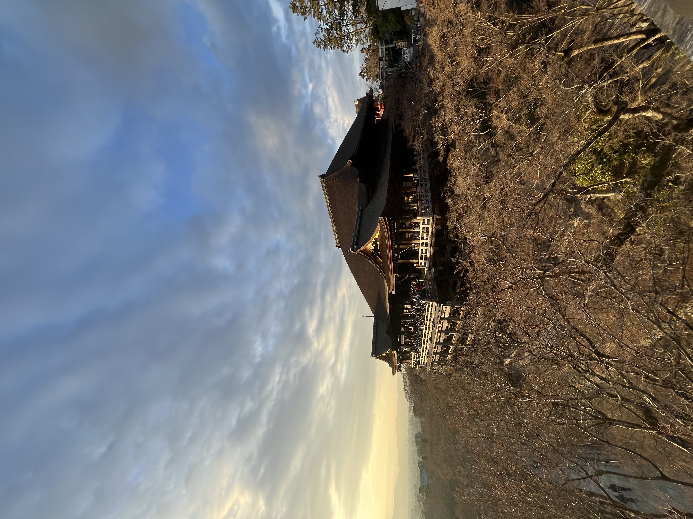
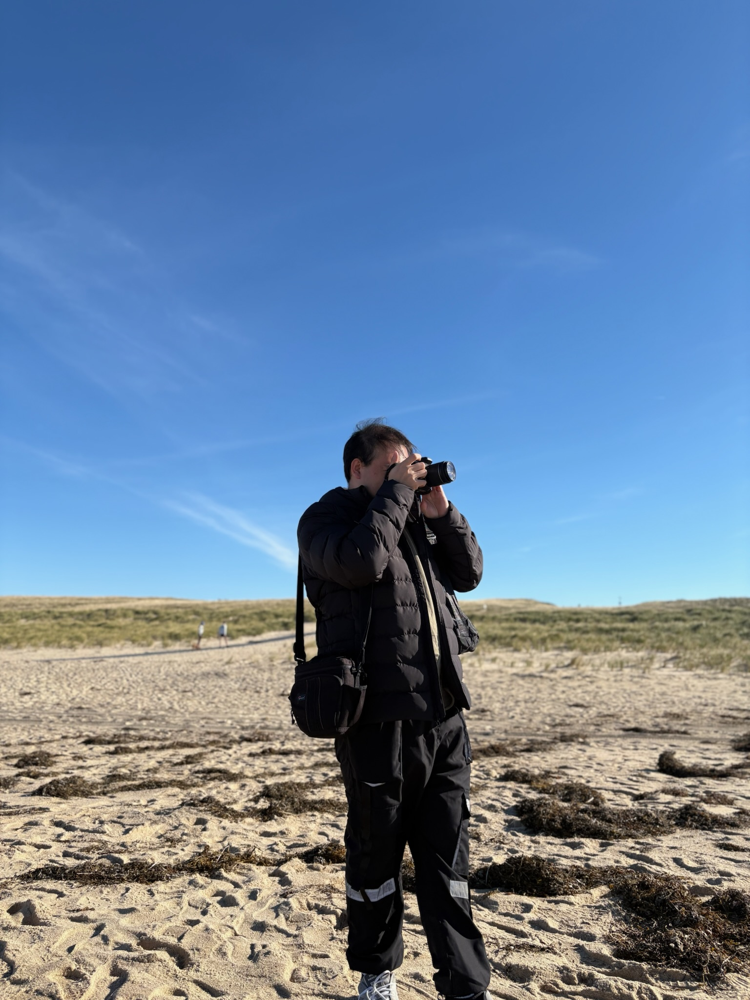

<div class="textcontainer">
<h3>About Me</h3>
<p class="margin"> </p>
<div class="center-row">
<p></p>
<p id="aboutme">
Hey! This is Andrew! I'm a senior living in Kirkland House, studying Psychology. Some things I enjoy include trying new things, traveling, eating good food, chilling with friends, & photography. Excited to be in PS70 and I hope I don't start a fire (nvm I alr started one) :D
</p>
</div>
<br></br>
Errr more in depth: I think my favorite place I've been to is either Chiang Mai in Thailand or Kyoto in Japan. I really like eating Asian foods with Chinese and Japanese being my top two cusines. Looking forward to making some cool stuff, potentially stuff that makes my life harder.
<br></br>
<p></p>
<p></p>
<p></p>
</div>